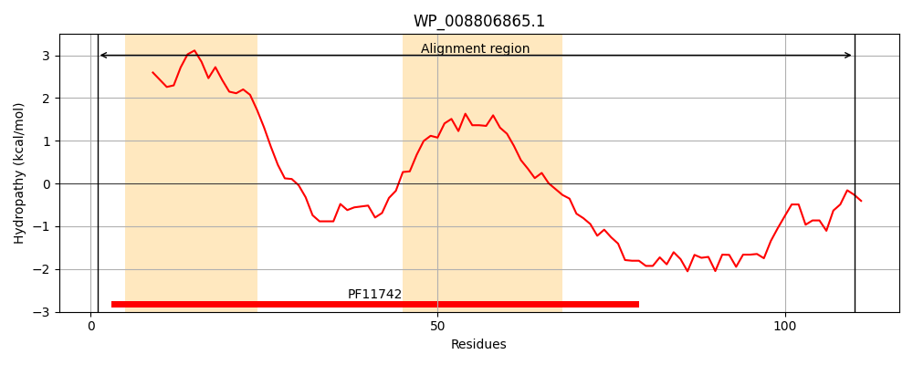
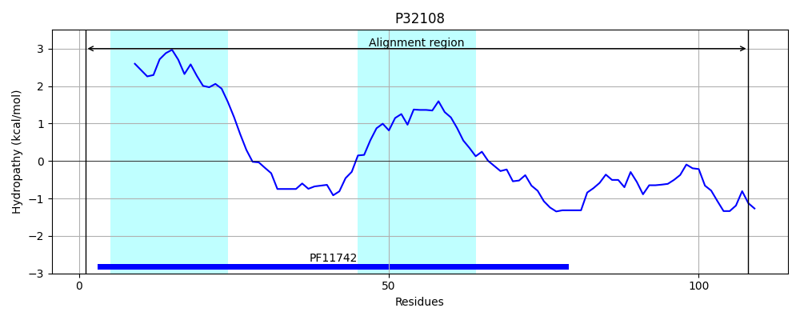
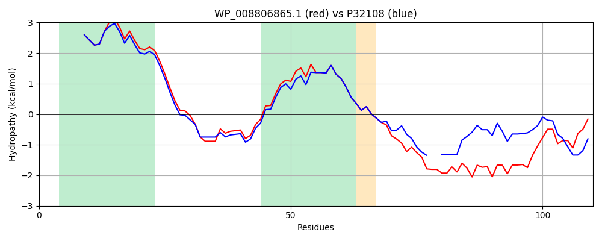

Hit Accession: P32108
Hit TCID: 9.B.32.1.1
Hit Description: gnl|BL_ORD_ID|9814 gnl|TC-DB|P32108|9.B.32.1.1 Uncharacterized protein yibI OS=Escherichia coli (strain K12) GN=yibI PE=4 SV=1
Mach Len: 110
e:0.000000
Query TMS Count : 2
Hit TMS Count: 2
TMS-Overlap Score: 2.000000
Predicted Substrates:None
BLAST Alignment:
| Protein Hydropathy Plots: | |
|---|---|
|  |  |
Pairwise Alignment-Hydropathy Plot: | |
|  | |